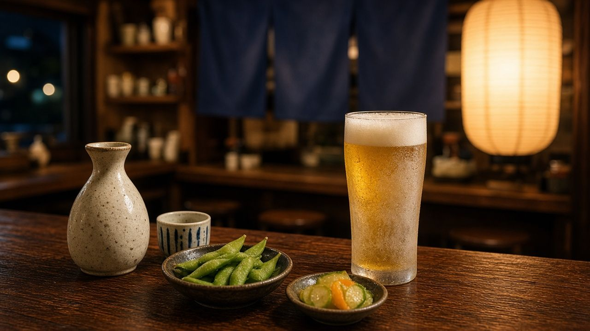
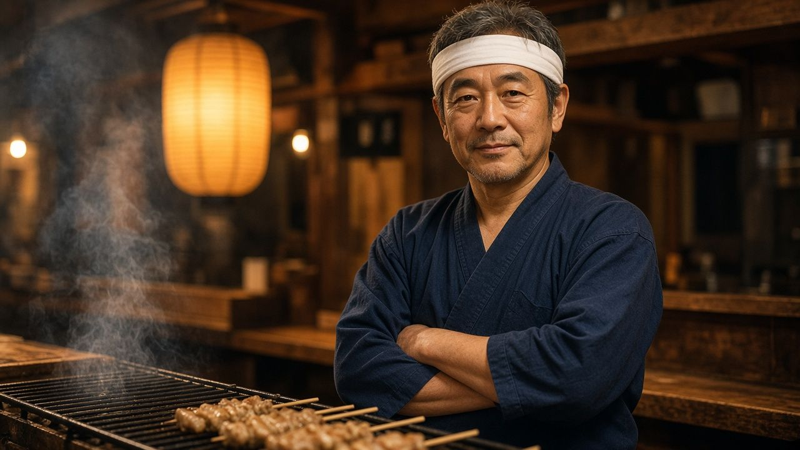

炭火焼き鳥と、じっくり煮込んだおでんの店
備長炭で一本ずつ丁寧に焼き上げる焼き鳥と、昆布と鰹の出汁で一日かけて煮含めたおでん。木のぬくもりと灯りに包まれた店内で、肩の力を抜いてお過ごしください。

※本サイトは架空の店舗によるデモサイトです。

店主 灯野 鉄之助（とうの てつのすけ）※架空の人物です
以下は、店主が真剣な顔で語った「こだわり」です。本人は一切ふざけていません。
一回の焼き台に乗せる串は、必ず17本ちょうどです。16本では火が暇を持て余す。18本では炭が「聞いてない」という顔をする。ご注文が18本入ったらどうするのか。17本焼いて、残りの1本は、次の17本の一番最初に焼きます。そしてその回は、新しく16本を足して、やはり17本にする。計算が合わない夜は、閉店後に帳場で一人、串を数え直しています。合っています。いつも合っているんです。
開店の三十分前には、店内の温度を26.5度に保ちます。26度では暖簾をくぐった瞬間の「ほっ」が足りない。27度では「ほっ」が「ふう」になってしまう。0.5度の差が、人生の差です。温度計は入口、カウンター、座敷、そして私の作務衣の胸ポケットに一つずつ。お客様が一人入るごとに0.1度上がるので、扉を開ける角度で調整しています。満席の夜、扉は十二度だけ開いています。
おしぼりは三つ折りにしてから、最後に半分だけ、ほんの気持ち程度に折ります。四つ折りでは几帳面すぎて緊張させる。三つ折りでは潔すぎて寂しい。この「半」に十年かかりました。
お迎えの「いらっしゃいませ」は1.8秒で言い切ります。ストップウォッチで練習しました。2秒を超えると押しつけがましく、1.5秒では事務的です。鏡の前で毎朝十回。最近は寝言でも1.8秒だと家族に言われます。
よく聞かれるんです。「大将、なんでそんなに串を見つめてるんですか」と。見つめているのではありません。測っているんです。ねぎまの串は、まな板に対して二十三度。これより浅いと葱が拗ねる。深いと鶏が遠慮する。二十二度の日もありました。若かった。あの頃の私は、角度というものを信じていなかった。今は分度器を三つ持っています。一つは予備、もう一つは予備の予備、最後の一つは、心の分度器です。
焼き鳥を返す拍子は、メトロノームで七十二。人間の安静時の心拍に近い数字です。つまり串も、落ち着いた気持ちで焼かれたいんです。一度、忙しさに負けてBPM九十六で返したことがあります。お客さんは「美味しい」と言ってくれました。でも私には分かった。あれは、少し焦っている味でした。以来、店のメトロノームは一度も電池を切らしたことがありません。電池の銘柄も決めていますが、それは企業秘密です。
備長炭は、軽く叩くと「キン」と鳴ります。良い炭はラの音。少し低いソのシャープは、まだ迷いがある炭です。毎朝、炭を一本ずつ叩いて、チューナーで確認しています。仕入れ業者さんには「普通に使えますよ」と言われますが、普通では駄目なんです。開店前の店内に響く炭の和音。あれを聞かないと、私の一日は始まらない。近所の方からは、毎朝木琴の練習をしている人だと思われています。
「焼き鳥は、火と、角度と、拍子と、少しの祈りでできています。」
おでんの大根は、必ず北北東を向いて切ります。理由ですか。南を向いて切ったら、大根がまぶしそうだったからです。それから厚さは三センチ。三・一センチになると、出汁が「少し多いな」という顔をする。ですから包丁の横に定規を置いています。弟子が来たら、まず方位磁針の読み方から教えるつもりです。まだ一人も来ていません。
店先の暖簾は、湿度がちょうど四十八パーセントの日にしか洗いません。乾きすぎると藍が寂しがる。湿りすぎると、乾くまでに暖簾が考え事をしてしまう。だから店には湿度計が五つあります。条件の合う日が二か月来なかった年もありました。あの時の暖簾は、確かに少し味わい深かった。常連さんは「渋くなった」と褒めてくれました。私は黙って湿度計を拭いていました。
満月の夜は、提灯を少しだけ暗くします。月に遠慮しているんです。新月の夜は、少しだけ明るく。お客さんが帰り道で寂しくならないように。調光つまみには、新月から満月まで二十九の目盛りを自分で書き込みました。曇りの日はどうするのか、とよく聞かれます。曇りの日は、月がどこかで頑張っていると信じて、暦どおりにします。
パイナップルおでんについては、毎晩のように質問を受けます。「なぜ」と。逆にお聞きしたい。なぜ、今まで誰も入れなかったのか。大根は土の中で育ち、パイナップルは太陽の下で育つ。その二つが同じ出汁の中で出会う。これは鍋の中の国際交流です。最初の三年は、私以外誰も注文しませんでした。四年目に一人、頼んでくださった方がいた。その方は黙って食べ、黙って帰り、翌週もう一度来ました。それだけで、十分なんです。
最後に、箸置きの位置です。お皿の右端から三十七ミリ。三十五ミリでは窮屈で、四十ミリでは箸が寂しい。三十七ミリです。開店前、定規を持ってカウンターを端から端まで歩きます。全部で八席。一席あたり二分。毎日十六分、私は三十七ミリのことだけを考えています。お客さんは誰も気づきません。気づかれないことこそが、こだわりなのだと思っています。
そして、これだけは声を大にして申し上げたい。衛生面には気を使って、トイレに行ったら手を洗ってます。……毎回です。一度の例外もありません。この店を開いた日に、暖簾の前で自分に誓いました。
こうして話すと、面倒な店主だと思われるでしょう。その通りです。でも、面倒なことを毎日きちんと続けると、それはいつか「いつもの味」になる。お客さんが暖簾をくぐって、何も考えずに「いつもの」と言える。そのために、私は今日も分度器とメトロノームと湿度計と定規を持って、炭の音を聞いています。どうぞ、何も気にせずお楽しみください。気にするのは、私だけで十分です。
※店主の人物像・発言・店のこだわりはすべて架空の演出です。
店名：炭火焼き鳥とおでん 灯り屋
住所：東京都架空区灯町1-2-3（架空の住所です）
電話：00-0000-0000（架空）
営業時間：17:00〜23:30（L.O. 23:00）
定休日：日曜・祝日
席数：カウンター8席・座敷16席
※デモ用フォームです。送信内容はどこにも送られません。